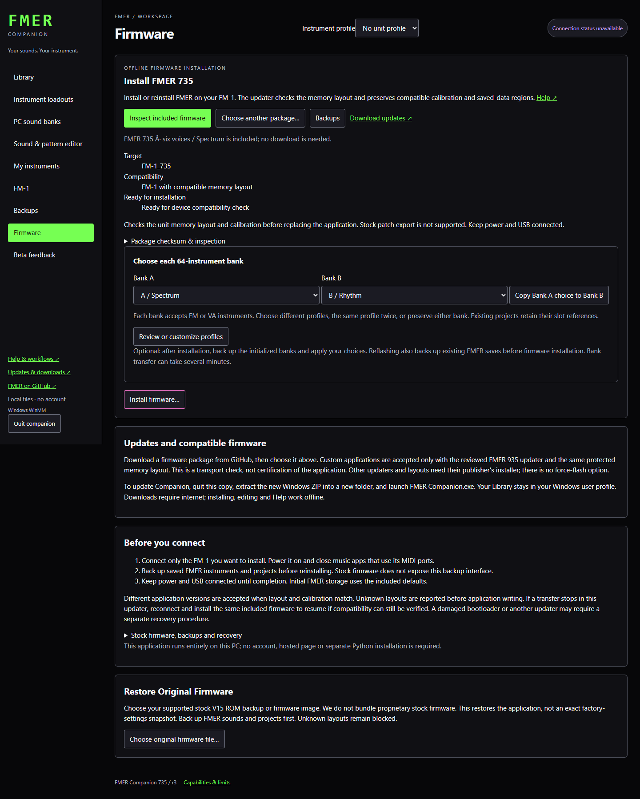

Companion
Instrument loadout profiles
Save ordered 64-instrument profiles and independently populate Bank A and Bank B during installation or later.
A loadout profile stores 64 complete instruments in a fixed order. FM and VA sounds can occupy any slot. Profiles live on this computer until you explicitly apply them to an FM-1.
Build your own collection
- Open Instrument loadouts. Choose Spectrum (balanced), Rhythm (drums/bass), Voltage (leads/arp), Atmosphere (pads/weird), or Classic (compiled firmware defaults).
- Enter a name and choose Save a copy. Included profiles stay intact.
- Select a slot, then Choose instrument. Search included sounds, your Library and PC banks. Listen before replacing the slot.
- Use Move earlier, Move later or Move to to reorder the sounds. Undo reverses one committed edit. Name and notes use Save name & notes.
- Export profile saves a checksummed .fmer-loadout.json file. Import profile makes a new independent copy. You can keep twelve personal profiles plus the included ones.
Save bank as profile captures a complete PC Bank A or Bank B bank. Fill empty PC slots first. Editing a Library sound later does not change a saved profile; replace the profile slot explicitly to adopt the new version.
Choose Bank A and Bank B independently
Each bank holds 64 instruments. For example, select Spectrum for Bank A and Rhythm for Bank B. You can also choose the same profile for both, or Keep bank unchanged for either one. Review & apply bank choices backs up the unit and writes only the selected banks. It does not flash firmware. Slot numbers00?63 match the unit display.
Choose sounds when installing
- Open Firmware and inspect the included FMER package.
- Choose a separate profile for Bank A and Bank B, or keep either bank unchanged. On a first install, unchanged banks use the compiled defaults.
- Review the named bank replacements and confirm once. Existing supported FMER saves are backed up before installation. Stock firmware does not expose the native backup interface.
- Keep USB and power connected while Companion installs, reconnects, backs up initialized banks, writes the instruments and verifies them. This can take several minutes. The progress banner identifies the current phase.
Custom firmware and stock recovery do not receive automatic loadouts. Only the reviewed included FMER release supports this combined workflow.
Your projects and reset actions
Replacing a slot changes the sound of projects using that slot. Projects remain stored, but their instrument references are not remapped. After deployment you can use the unit without Companion. Reset to FMER Default and Reset User Bank still restore the firmware?s compiled Classic collection; your personal profile remains safely on the computer and can be applied again.
If transfer stops
Companion distinguishes completed firmware installation from incomplete bank transfer, retains the list of verified slots, and offers the backup and operation record. There is no automatic rollback or retry. Check the connection and installed banks, then explicitly send the chosen profiles again. A failed bank transfer does not require another firmware installation.
Expressions2 and firmware735
Spectrum A contains all62 favorites from the owner review plus two contrasting bass voices:36 FM and28 VA instruments. B focuses on drums and bass, C on leads and arps, and D on pads, ambience and unusual textures. Each profile holds64 sounds; the combined library contains192 unique original instruments. Classic retains the previous64 defaults. Bank A and Bank B are independent64-slot destinations; either can contain any mix of engines.
PRESETS browses Bank A slots0–63 followed by Bank B slots0–63 in exact loadout order. K1 jumps between those two banks. The header identifies FM or VA. Selecting a patch preserves the playing mode.
Keep existing instruments backs up both banks and materializes inherited sounds affected by a firmware default change. Selected loadouts replace only reviewed destinations. Projects retain slot references, so changing a referenced slot changes its sound. Firmware735 stores native12 records; older versions need a separate storage migration before downgrade.
Browse by sound family
The included Expressions profiles group like instruments together across both engines: bass, leads and arps, keys and plucks, mallets and bells, organs and winds, strings and pads, percussion, then motion and textures. Percussion puts kicks, snares, claps and hats together. Your own saved profiles keep the slot order you choose.

